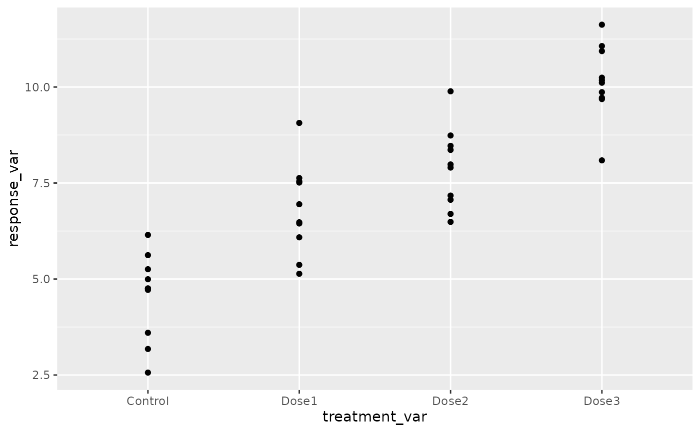

library(drcHelper)
#> Loading required package: drc
#> Loading required package: MASS
#>
#> 'drc' has been loaded.
#> Please cite R and 'drc' if used for a publication,
#> for references type 'citation()' and 'citation('drc')'.
#>
#> Attaching package: 'drc'
#> The following objects are masked from 'package:stats':
#>
#> gaussian, getInitialTrend Test by Testing Linear and Quadratic Contrasts
Generate mock data for testing
library(ggplot2)
mock_data <- data.frame(
treatment_var = factor(rep(c("Control", "Dose1", "Dose2", "Dose3"), each = 10)),
response_var = c(rnorm(10, mean = 5), rnorm(10, mean = 7), rnorm(10, mean = 8), rnorm(10, mean = 10))
)
ggplot(mock_data,aes(x=treatment_var,y=response_var))+geom_point()
result <- monotonicityTest(mock_data, "treatment_var", "response_var")
result
#> Test t value Pr(>|t|) Significance
#> 1 Linear 11.16 <0.0001 ***
#> 2 Quadratic -0.10 0.9196 .